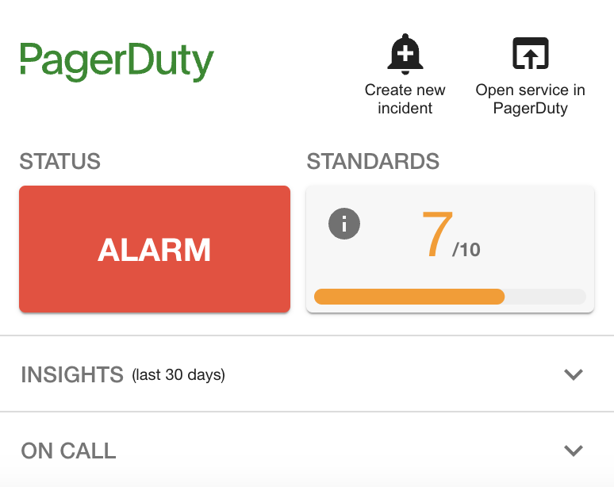

Release notes for Frontend plugin
> 0.15.1
Summary
This release enables the PagerDuty option in the PagerDutyPage component settings which allows users to set PagerDuty as their main source for syncing service dependencies to Backstage.
This feature was disabled due to a limitation on version 0.3.0 of @pagerduty/backstage-plugin-entity-processor which is now fixed and released on version 0.3.1.
Changes
- refactor: enable PagerDuty option on PagerDutyPage
Dependencies
@pagerduty/backstage-plugin-backend: 0.9.0@pagerduty/backstage-plugin-common: 0.2.1@pagerduty/backstage-plugin-entity-provider: 0.3.1
> 0.15.0
Summary
This release updates the PagerDutyPage component to add a new configurations tab where users can configure how they want to sync service dependencies between Backstage and PagerDuty.
By default, service dependency syncing is disabled. It's an opt-in feature and admins need to be aware of what it does because you might end up deleting existing service dependencies on Backstage or PagerDuty.
‼️ Important: Due to a Backstage design decision it is not possible to fully overwrite the relations specified in each entity's configuration file. For that reason the option to synchronise strictly from PagerDuty side is not available.
On this release we also introduced a fix that was preventing users from showing/hiding columns on the service to entity mapping table.
Changes
- refactor: disabled PagerDuty option due to a design limitation on Backstage
- fix: turned columnvisibility into a static object
- feat: service dependency sync
Dependencies
@pagerduty/backstage-plugin-backend: 0.9.0@pagerduty/backstage-plugin-common: 0.2.1
> 0.14.1
Summary
This release refactors areas where JSON.parse was used in unsafe code which leaves the potential for unexpected exceptions.
It also bumps Backstage package versions and fixes a high severity security issue on a 3rd party dependency.
Changes
- chore(deps): bump fast-loops from 1.1.3 to 1.1.4
- chore: remove json parse from unsafe code
Dependencies
@pagerduty/backstage-plugin-backend: 0.8.0@pagerduty/backstage-plugin-common: 0.2.0
> 0.14.0
Summary
Release 0.14.0 introduces support for multi-account configuration. With this release, admins will be able to specify multiple PagerDuty accounts in the same Backstage instance. Support was added across all the components of the plugin:
- Backend: All API routes exposed take account as an optional parameter so you can create and query information from different PagerDuty Accounts. If admins leverage the Entity Mapping feature, the account is now persisted into the plugin database.
- Scaffolder Actions: When the scaffolder action is used on a template it now lists Escalation Policies from all accounts configured so the user can easily select the one they want. The Scaffolder action
also outputs the account so it can be replaced in the
app-config.yamlannotations. - Entity Processor: If an entity mapping stored in the plugin database contains the
accountproperty, the processor will add an annotation to the entity with its information.
This release solves an existing problem for many large organizations that have several PagerDuty accounts for segregation purposes or that result from company acquisitions.
Changes
- feat: add support for multi-account
Dependencies
@pagerduty/backstage-plugin-backend: 0.8.0@pagerduty/backstage-plugin-common: 0.2.0
> 0.13.0
Summary
Release 0.13.0 introduces a PagerDutyPage component which can be added to your Backstage menu and allows users to explore advanced PagerDuty configurations. With this release we are adding support for Entity mapping which allows users to easily map existing PagerDuty services to Backstage entities without requiring updates to each service config file.
Below is an example of how the PagerDutyPage looks like when added to a Backstage instance.
Users will be able to see if the entity definition is up to date with the configuration in file or not and chose to persist the changes by manually creating a PR in the source code.
This release also applies a few security patches related to Backstage dependencies.
Changes
- docs: update readme with mapping capability
- feat: advanced config page
- chore(deps): bump ws from 8.14.2 to 8.17.1
Dependencies
@pagerduty/backstage-plugin-backend: 0.7.0@pagerduty/backstage-plugin-common: 0.1.5
> 0.12.2
Summary
This release includes a security patch and a bug fix that was allowing users to create incidents without defining the description of incidents after they created the first one. The state of the description property is now being cleaned up on successful incident creation.
Changes
- chore(deps): bump braces from 3.0.2 to 3.0.3
- fix: ensures incident description state is cleaned after an incident is triggered
Dependencies
@pagerduty/backstage-plugin-backend: ^0.5.1@pagerduty/backstage-plugin-common: ^0.1.2
> 0.12.1
Summary
Version 0.12.1 updates all backstage dependencies to the latest version. The PR that originated this version was created based on customer request to update @backstage/core-components to version 0.14 (#102).
We decided to use this opportunity to upgrade all packages (see list of upgraded packages below).
Dependencies:
- @backstage/catalog-model
- @backstage/core-components
- @backstage/core-plugin-api
- @backstage/errors
- @backstage/plugin-catalog-react
- @backstage/plugin-home-react
- @backstage/theme
DevDependencies:
- @backstage/cli
- @backstage/core-app-api
- @backstage/dev-utils
- @backstage/test-utils
Changes
- chore: upgrade backstage/core components to version 0.14
- fix: correct client test case description
Dependencies
@pagerduty/backstage-plugin-backend: ^0.5.1@pagerduty/backstage-plugin-common: ^0.1.2
> 0.12.0
Summary
This release introduces a new UI component - PagerDutySmallCard - which allows users to still have visibility on the status of their PagerDuty services in Backstage without using so much screen space. This new UI component removes information on incidents and recent changes, and moves insights and on call information to collapsable panels that can optionally be removed.

This feature was initially contributed by @milenkotomic and slightly modify after feedback from other community members.
Changes
- feat: small sized PagerDutyCard component
- chore(deps): bump tar from 6.2.0 to 6.2.1
Dependencies
@pagerduty/backstage-plugin-backend: ^0.5.1@pagerduty/backstage-plugin-common: ^0.1.2
> 0.11.0
Summary
This release introduces a few minor changes and fixes that were part of our roadmap.
-
Users are now able to hide the on-call section We introduced a new parameter on the
PagerDutyCardentity that allows users to completely hide the on-call information section. This feature was mentioned by a few customers and now it is available through an opt-in mechanism. -
Creating an incident is now hidden by default when
integration-keyis missing Previously the button to create a new incident was disabled if theintegration-keyconfiguration was not defined. We have changed that behaviour to completely remove the button from the card as it was causing confusion according to some customers we interviewed. -
Added documentation on how to disable the change events tab The
PagerDutyCardcomponent already had the capability to completely hide the change events tab by using thedisableChangeEventsproperty but this feature was not documented. This information is now part of the official plugin documentation.
Changes
- feat: hide on-call information
- feat: hide trigger incident on missing integration key
- chore(deps): bump express from 4.18.2 to 4.19.2
- chore(deps): bump webpack-dev-middleware from 5.3.3 to 5.3.4
Dependencies
@pagerduty/backstage-plugin-backend: ^0.5.1@pagerduty/backstage-plugin-common: ^0.1.2
> 0.10.0
Summary
This release introduces a new UI to the PagerDutyCard that is used on each Entity Page. This new UI introduces:
- official PagerDuty logo
- clear visibility on incident status and urgency
- service status
- service standards
- visibility on service metrics (total incidents, high urgency incidents, total number of interruptions)
- escalation policy information on the on-call section
This release also updates the behaviour of some components from the PagerDutyCard.
- the button to contact the on-call user by email is now removed
- the "create incident" button is now completely hidden in case of
read-onlymode, instead of just disabling the button.
For Scoped OAuth users üëâ This release requires you to add additional scopes to your App Registration in PagerDuty: analytics.read and standards.read.
Changes
- chore(deps): bump follow-redirects from 1.15.4 to 1.15.6
- style: refresh PagerDutyCard UI
Dependencies
@pagerduty/backstage-plugin-backend: ^0.5.1@pagerduty/backstage-plugin-common: ^0.1.2
> 0.9.3
Summary
This release removes the pagerDuty.apiToken and pagerDuty.oauth configuration definitions from this repository as they should be treated as secret config and this frontend plugin does not need to know about them.
These configurations will now be exclusive to the backend plugin.
Changes
- fix: remove config definitions that are secret
> 0.9.2
Summary
This release resolves an issue reported in backstage-plugin (#74) which prevents users from overriding the REST API base url (e.g. for EU based accounts). This feature was possible through the Backstage proxy configuration.
With this, users will be able to add a new configuration to the PagerDuty plugin in app-config.yaml like the example below.
This feature in mainly implemented in @pagerduty/backstage-plugin-backend but this release updates the plugin config schema accordingly.
Changes
- fix: updating config schema to allow overriding of api base url
> 0.9.1
Summary
This release introduces a security patch to a third-party dependency.
Changes
- build(deps): Bump ip from 2.0.0 to 2.0.1
> 0.9.0
Summary
This release adds the type necessary for OAuth support in Backstage plugin configuration. Users can now configure the following OAuth parameters in Backstage app-config.yaml file.
pagerDuty:
oauth:
clientId: ${PD_CLIENT_ID}
clientSecret: ${PD_CLIENT_SECRET}
subDomain: ${PD_ACCOUNT_SUBDOMAIN}
region: ${PD_ACCOUNT_REGION} // Optional. allowed values: 'us', 'eu'. Defaults to 'us'.
It also introduces more friendly error messages when permissions for certain APIs or operations are not present. This was implemented not to break the PagerDuty Card experience.
Changes
- feat: add suport for Scope OAuth
- fix: update error links to PagerDuty docs
> 0.8.3
Summary
Version 0.8.3 fixes an issue that was causing an error message to show on-screen for user accounts that don't have AIOPs or Event Intelligence capabilities.

With this changes instead of getting an out-of-context error message users will see this image and message instead.

Changes
- refactor: improve error handling on client side for change events
> 0.8.2
Summary
Version 0.8.2 bumps the version of @pagerduty/backstage-plugin-common to version 0.0.2.
Version 0.0.1 had a misconfiguration that was forcing the backend plugin to load it as an ES6 module and while that's supported for the frontend it is not yet fully supported for backend plugins.
This dependency upgrade syncs the version of the common package between frontend and backend plugins.
Changes
- chore(deps): bumping up common package version to latest
> 0.8.1
Summary
This minor release moves the direct REST API calls from the frontend component to the backend. Instead of leveraging the Backstage proxy to make direct API calls to PagerDuty the calls are made to the backend plugin instead.
This removes the dependency on the proxy and prevents other plugins from using the PagerDuty proxy configuration to call PagerDuty APIs directly for other purposes which raises few security concerns.
Therefore the proxy configuration for PagerDuty on app-config.yaml is no longer required and is in-fact deprecated.
Changes
- feat: migrate api calls
- chore(deps): bump follow-redirects from 1.15.3 to 1.15.4
> 0.7.4
Summary
This release includes a fix to a bug that prevented the PagerDutyCard from refreshing when users leveraged the Backstage search to navigate between components.
üêõ Bug fixes
- fix: component now refreshes when navigating between components from Search
> 0.7.3
Summary
This release updates the Backstage plugin configuration schema to add support for apiToken.
The latest release of the backend plugin (0.2.0) required a schema change for the plugin to start successfully. It does not introduce new features or capabilities to this plugin but it makes sure that the schemas match and avoid misconfigurations.
üîß Maintenance
- chore(schema): updated config schema to match backend plugin
> 0.7.2
Summary
This release fixes an issue that prevented the installation of the plugin if the Backstage React version was not compatible with the plugin version. It also fixes a moderate security issue, adds support for React 18+ and bumps up the versions of Backstage packages.
üîß Maintenance
- chore(deps): add support for React 18+ (#43)
- chore(deps): bump up Backstage versions (#44)
- docs: Simplify readme file and point to full documentation (#47)
- chore(deps): bump @adobe/css-tools from 4.3.1 to 4.3.2
- fix: move strict dependencies
> 0.7.1
Summary
With release 0.7.1 we have fixed some issues and added new capabilities to the oncall user list.
- List only users in escalation level 1 - these are the users that are actually oncall.
- Remove duplicate users from the oncall user list
- Add support for user profile picture and fallback to dummy avatar icon when an image is not provided.
üåü Minor Changes
- fix: list only oncall users in plugin
> 0.7.0
Summary
This release marks the first version under PagerDuty's ownership of the Backstage plugin. You will not notice any major changes. Here's what we did:
- Fixed a bug that was preventing recent changes tab to show
- Removed double headers on plugin UI component for incidents and recent changes
- Patched potential security vulnerabilities on dependencies
üîß Maintenance
- chore(deps): bump zod from 3.22.2 to 3.22.4
- chore(deps): bump browserify-sign from 4.2.1 to 4.2.2
- chore(deps): bump @babel/traverse from 7.22.20 to 7.23.2
- chore(deps): bump postcss from 8.4.29 to 8.4.31
- chore(ci): adding release drafter with config
- chore(deps)Bump graphql from 16.8.0 to 16.8.1
- chore(ci): adding github action to publish package on new release
- chore(docs): adding CODEOWNERS
- chore(ci): changing release step to trigger on pr close and merge
- chore(ci): forcing npm registry by default
- chore(ci): Build and publish package to npm
üåü Minor Changes
- fix(ui): Removing sub-headers from lists